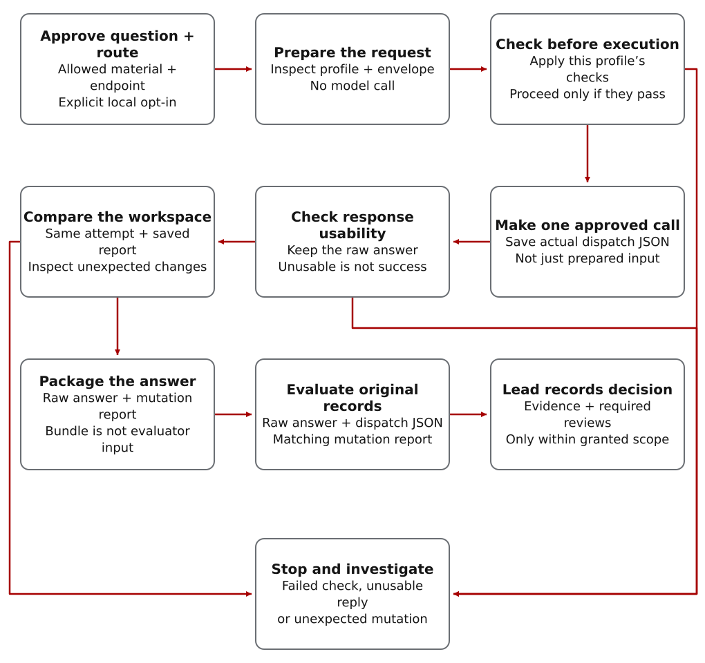

From an approved question to an accepted finding
- Choose a focused question, allowed material and approved endpoint.
- Prepare and inspect the request without calling the model.
- Execute the one approved call and retain its actual dispatch result.
- Check response usability, evaluate the answer and record the lead’s decision.
Generic OpenAI-compatible profiles and hardened exact-model profiles have different checks. Select the required profile deliberately; a configured model name does not prove which model weights the server actually runs. Inspect the existing component tests.
Ask for a specific local review
Ask Codex to size the task and propose the local-model route. If you have not already opted in, the coach asks before preparing a dispatch. The task and its evidence still need a Beads record.

Read the diagram as text
- Approve the question, allowed material, local inference and configured endpoint/profile. Prepare and inspect the request without calling a model. Apply the selected profile’s safety checks; hardened exact-model checks are conditional on that profile, not universal.
- Only after those checks pass, make one approved model call and save its actual dispatch JSON. Preparation output is not that result. Confirm that the response contains a usable answer; a configured model name alone does not attest the server’s weights.
- Compare the workspace against the saved baseline for the same attempt. Retain the matching mutation report. Failed checks, an unusable answer or unexpected mutations stop this path for investigation; do not silently proceed to normalization.
- The normalizer receives the raw answer and mutation report. The evaluator instead receives the raw answer, actual dispatch JSON and matching mutation report; the normalized bundle is not a substitute for those inputs.
- The lead checks the evaluation and any required reviews, then records what may be used within the granted scope. Keep the selectable commands below for the complete transaction.
/plan Use $complex-work-orchestration prompt coach:
OpenShift AI vLLM local review of README command examples.Confirm local dispatch and review requirements
A short command example, small diff or bounded log excerpt can be a useful local-review task. State what the reviewer should check and what material it may receive. Use deterministic checks directly when they can answer the question without a model.
Choose the local model for demonstrated task fit and data-handling requirements, not merely because it is local. Its answer still needs evaluation and a lead’s decision before implementation.
What Codex may run behind the scenes after explicit opt-in:
python3 scripts/coach_prompt.py \
--local-ok \
--prefer-local \
--local-profile openshift-ai-vllm \
--requested-role documentation \
"OpenShift AI vLLM local review of README command examples."The route should confirm that local-worker dispatch is enabled, that normal Codex workers cannot claim the assignment, and that evaluator plus architect checkpoints remain required before any follow-up implementation.
Operator reference: expected route fields
Advanced operators should see route=local-worker,
local_worker_allowed=true,
local-worker-only, no-codex-exec,
evaluator requirement, and architect adjudication requirement.
Choose an endpoint and model profile
The documented OpenShift AI vLLM profile connects CWO to an operator-managed model endpoint. Select it when that endpoint is the approved place to process the review material.
OpenShift AI is not required. The generic OpenAI-compatible profile supports other approved local or private serving stacks. A profile entry is configuration; verify the actual endpoint before using it.
In a restricted or airgapped environment, Codex may be unavailable. CWO can render a prompt and suggested command for OpenCode or a manual operator shell. That rendering is not proof of a working end-to-end integration; verify the exact harness, model and access combination.
Optional model and disconnected-environment catalog
The executor registry names callable roles. Access profiles describe how each role reaches its model or tool and what it may access. The model-profile table below then selects the model for a role; it does not establish that the model is deployed or qualified.
Use openshift-ai-vllm when targeting an OpenShift
AI vLLM endpoint, or the generic OpenAI-compatible profile for
other serving stacks. The access profile records the env var
names CWO may mention; it does not print API keys or endpoint
values.
An execution environment assigns roles to tools; an access profile records connection and permission requirements; a model profile names the model for a role. In airgapped OpenCode configurations, these roles include architect, project manager, worker, reviewer and synthesis input. Exact model profiles are in policy/model-profiles.yaml.
| Role | Model profile | Use |
|---|---|---|
| Worker | rhoai-worker-qwen2-5-coder-32b-fp8 |
Code-oriented review, test triage, and bounded patch planning. |
| Secure review | rhoai-secure-review-qwen3-6-35b-a3b-nvfp4 |
Local read-only security, peer-review, and malpractice screening evidence. |
| Synthesis input | rhoai-synthesis-qwen3-5-122b-a10b-nvfp4 |
Independent local counter-review for synthesis, with CWO retaining adjudication. |
| Large-cluster enterprise architecture |
|
Use for larger disconnected planning candidates after a benchmark gate. |
| Multimodal review | rhoai-reviewer-llama-4-maverick-17b-128e-fp8 |
Visual or mixed-modal review evidence when the harness and endpoint safely support it. |
The registry’s airgapped-rhoai configuration is a starting example, not qualification of your endpoint. Verify the deployed model and representative task before use. Benchmark larger Nemotron or GLM architecture profiles on enterprise-scale OpenShift AI clusters before promotion: record GPU topology, P2P/NCCL communication, exact vLLM flags, endpoint smoke tests, representative CWO tasks, evaluator scores and the lead’s decision.
Codex may run the route helper behind the scenes. Use it directly only for advanced automation or troubleshooting:
python3 scripts/route_work.py \
--local-ok \
--prefer-local \
--local-profile openshift-ai-vllm \
--requested-role documentation \
"Documentation review for the public README examples."Endpoint Configuration
Keep endpoint values in an operator-owned shell file outside the repository. The access profile registry is policy only; it should contain environment variable names, not URLs, API keys, tokens, or route-specific secrets.
mkdir -p ~/.config/cwo
chmod 700 ~/.config/cwo
$EDITOR ~/.config/cwo/vllm-endpoints.env
chmod 600 ~/.config/cwo/vllm-endpoints.envUse stable model aliases where possible so routing does not change when the serving backend changes.
export CWO_OPENSHIFT_AI_VLLM_BASE_URL="https://vllm.example.internal"
export CWO_OPENSHIFT_AI_VLLM_MODEL="rhoai/workerbee"
export CWO_OPENSHIFT_AI_VLLM_API_KEY="..."
export CWO_OPENSHIFT_AI_GLM_5_2_BF16_BASE_URL="https://glm-route.example.internal"
export CWO_OPENSHIFT_AI_GLM_5_2_BF16_MODEL="glm-5.2-bf16-128k"
export CWO_OPENSHIFT_AI_GLM_5_2_BF16_256K_BASE_URL="https://glm-256k-route.example.internal"
export CWO_OPENSHIFT_AI_GLM_5_2_BF16_256K_MODEL="glm-5.2-bf16-256k"
# Optional for private route trust.
export CWO_OPENSHIFT_AI_VLLM_CA_BUNDLE="$HOME/.config/cwo/rhoai-ca.pem"
# Lab-only escape hatches when the endpoint route cannot yet be validated.
# export CWO_OPENSHIFT_AI_GLM_5_2_BF16_TLS_VERIFY=false
# export CWO_OPENSHIFT_AI_GLM_5_2_BF16_256K_TLS_VERIFY=falsesource ~/.config/cwo/vllm-endpoints.env
python3 scripts/render_access_profile_status.py --profile rhoai-vllm --require-configured
python3 scripts/render_access_profile_status.py --profile rhoai-glm-bf16 --require-configured
python3 scripts/render_access_profile_status.py --profile rhoai-glm-bf16-256k --require-configured
curl -sS "$CWO_OPENSHIFT_AI_VLLM_BASE_URL/v1/models" \
-H "Authorization: Bearer $CWO_OPENSHIFT_AI_VLLM_API_KEY"
The source access registry lives at
policy/access-profiles.yaml. The installed skill copy
lives under the Codex skills directory. After changing an access
profile, reinstall the skill and rerun the readiness check.
The older rhoai-glm-bf16 profile and the
independently configured rhoai-glm-bf16-256k
profile remain offline by default. The 256K profile
requires its dedicated base-URL environment variable. An
operator must verify the route and deliberately change its
policy status before normal execution. Any offline profile fails
closed unless an operator supplies the explicit waiver and
reason.
Prepare the request without calling the model
By default, dispatch writes a local envelope: a request record containing the selected profile, environment-variable names and bounded prompt. It contains neither API-key values nor endpoint URLs. No endpoint call occurs without --execute-local.
export CWO_OPENSHIFT_AI_VLLM_BASE_URL="https://vllm.example.internal"
export CWO_OPENSHIFT_AI_VLLM_MODEL="vllm-local"
python3 scripts/dispatch_work.py \
--local-ok \
--prefer-local \
--local-profile openshift-ai-vllm \
--dispatch-id dispatch-example \
--bead example \
--json \
"Summarize docs-review risks."python3 scripts/render_access_profile_status.py --profile rhoai-vllm
python3 scripts/render_access_profile_status.py --profile rhoai-vllm --require-configured
python3 scripts/render_access_profile_status.py --profile rhoai-glm-bf16-256k --require-configuredThe hardened GLM profile requires exact model glm-5.2-bf16-256k and checks /v1/models before posting to /v1/chat/completions. Keep this profile offline until the operator has verified its route. Its executing example is in the model-call step, after endpoint safety checks.
Verify and enable the intended route before execution; a configured profile alone does not establish availability.
Endpoint Safety
The local dispatcher rechecks the request against the selected executor, restricts the destination and disables proxy/redirect routing. Hardened profiles also require an exact model preflight and a usable final-response contract, separating reasoning from the returned answer. These checks are profile-specific; a generic OpenAI-compatible profile is not proof of the same hardening or of live endpoint qualification.
Execution is fail-closed: a failed check prevents the call. Before --execute-local
sends a request, CWO validates the endpoint URL, disables proxy
use, blocks redirects, and checks that the host resolves only to
loopback, RFC1918 private, or RFC4193 local IPv6 addresses.
The URL must not contain credentials. Plain HTTP is allowed only
for loopback endpoints such as 127.0.0.1 or
::1; private network endpoints should use HTTPS.
Hostnames that fail DNS, resolve to public addresses, or mix
private and public addresses are rejected before any POST occurs.
API keys are read only from an allowlisted environment variable
name. The built-in names are
CWO_OPENSHIFT_AI_VLLM_API_KEY,
CWO_LOCAL_OPENAI_API_KEY,
LOCAL_OPENAI_API_KEY,
LOCAL_VLLM_API_KEY, and
VLLM_API_KEY. Values are never copied into the
dispatch envelope.
Make the approved model call
Run from a CWO source checkout whose output files you will keep private. Set TASK_ID to the approved local-review task. Confirm the profile, endpoint and prompt before making a call. This complete example captures workspace state before execution, saves the dispatch JSON, extracts only a usable final answer and compares the workspace afterward. Existing output files cause a stop rather than being overwritten.
Run this block as one transaction. A failed dispatch or extraction stops before evaluation. Use its local-dispatch-result.json, local-return.md and mutation-report.json in the normalization commands below; inspect them before accepting any finding. No live endpoint call was used to validate this documentation example.
(
set -e
: "${TASK_ID:?Set TASK_ID to the approved local-review Bead ID}"
for file in before.json local-dispatch-result.json local-return.md mutation-report.json; do
test ! -e "$file" || { printf 'Refusing to overwrite %s\n' "$file"; exit 1; }
done
python3 scripts/workspace_mutation_guard.py --snapshot --output before.json
python3 scripts/dispatch_work.py \
--local-ok --prefer-local --local-profile openshift-ai-vllm \
--bead "$TASK_ID" --execute-local --json \
"Summarize docs-review risks." > local-dispatch-result.json
python3 - <<'PY'
import json
from pathlib import Path
result = json.loads(Path("local-dispatch-result.json").read_text(encoding="utf-8"))
response = result.get("local_response") or {}
if response.get("usable_final_content") is not True:
raise SystemExit("No usable final answer; do not normalize or evaluate this attempt.")
answer = response.get("normalized_return") or response.get("final_content")
if not isinstance(answer, str) or not answer.strip():
raise SystemExit("No final answer text; do not reuse an older return.")
Path("local-return.md").write_text(answer, encoding="utf-8")
PY
python3 scripts/workspace_mutation_guard.py --compare before.json --output mutation-report.json
)Bare invocation examples (alternatives, not additional calls)
The original commands below show the generic and exact-GLM options. They do not save the three evaluation artifacts by themselves. Do not run them after the complete example just to produce another answer. Use the capture procedure above around the one approved call.
A real local model call is never implicit. Use
--execute-local only after the operator has approved
the local profile, endpoint, prompt envelope, and Beads
assignment.
python3 scripts/dispatch_work.py \
--local-ok \
--prefer-local \
--local-profile openshift-ai-vllm \
--execute-local \
"Summarize docs-review risks."python3 scripts/dispatch_work.py \
--local-ok \
--local-profile openshift-ai-glm-256k \
--requested-role architecture \
--execute-local \
"Use exact GLM-5.2 BF16 256K thinking as an independent architecture critic second opinion."Workspace guard order for a custom approved call
python3 scripts/workspace_mutation_guard.py \
--snapshot \
--output before.json
# Run the approved local dispatch or capture the local return in local-return.md.
python3 scripts/workspace_mutation_guard.py \
--compare before.json \
--output mutation-report.jsonCheck the answer and record what may be used
Local worker and secure-review executors must set
codex_pickup=forbidden. They should not have web
access, shell execution, or repository write authority.
The workspace comparison must describe the same attempt as the saved dispatch result. If files changed unexpectedly, stop before normalization and inspect the mutation report. The guard checks tracked files by default; include --include-untracked in both guard calls when new files matter.
The commands below continue the generic OpenShift AI example above with the same TASK_ID and executor. For a dedicated GLM route, preserve its actual executor and dispatch identity instead; do not relabel it as the generic worker.
The normalizer packages the answer into a standard saved record; it does not read the dispatch result or decide whether the response is usable. The evaluator reads the raw local-return.md together with the actual dispatch JSON, not the normalized JSON bundle.
Normalize the return using the target Bead ID and the workspace mutation report. Preserve the executor identity so adjudication can distinguish local-worker evidence from external frontier contractor evidence:
python3 scripts/normalize_contractor_return.py \
--bead "$TASK_ID" \
--executor openshift_ai_vllm_worker \
--file local-return.md \
--workspace-mutation-report mutation-report.json \
--output local-return-bundle.json
Evaluate the return against the acceptance policy. Pass
--peer-review-required only if route policy or
provider-conflict flags require it:
python3 scripts/evaluate_return.py \
--bead "$TASK_ID" \
--executor openshift_ai_vllm_worker \
--local-dispatch-result local-dispatch-result.json \
--file local-return.md \
--workspace-mutation-report mutation-report.json
The normalized bundle and acceptance decision should show
provider_key=openshift_ai_vllm,
provider_trust_tier=local-platform,
local_profile=openshift-ai-vllm, and
provenance_class=local-worker.
expected_return_language=en. The evaluator rejects
missing or unsupported version-2 metadata, while legacy envelopes
use the current English policy default. Unicode and language
findings feed the same review, quarantine, and architect
adjudication path as other sabotage signals.
- Keep local dispatch disabled until explicitly approved.
- Capture workspace state and check for unauthorized changes.
- Normalize the returned answer and evaluate its evidence.
- Record the lead’s decision before acting on the findings.
- Keep failed, disputed or suspicious returns out of implementation until reviewed.